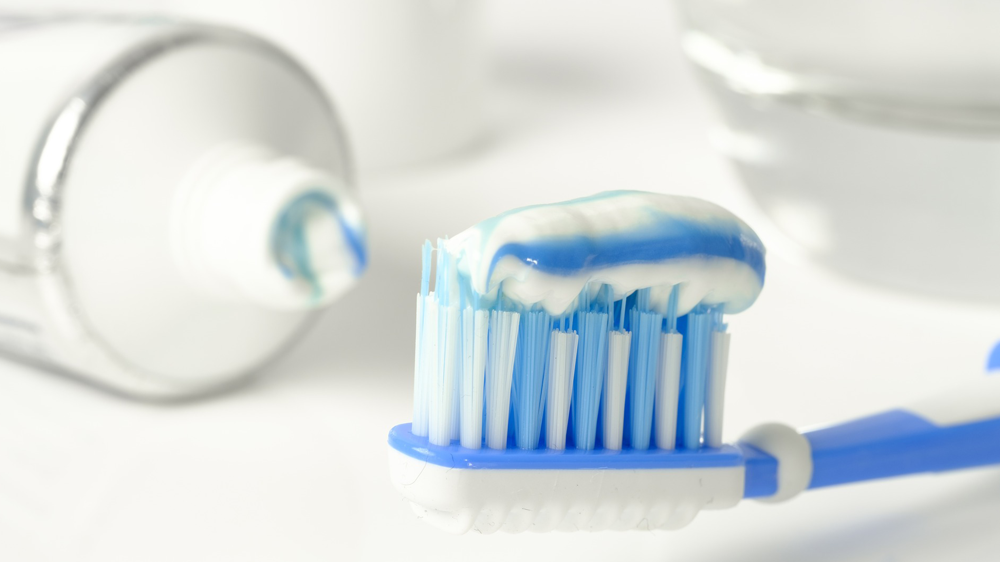
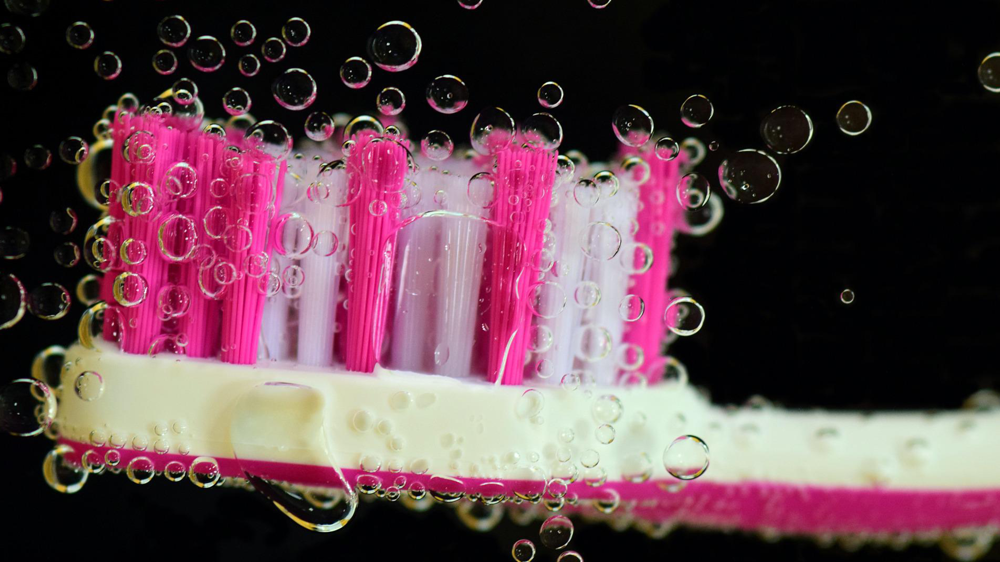
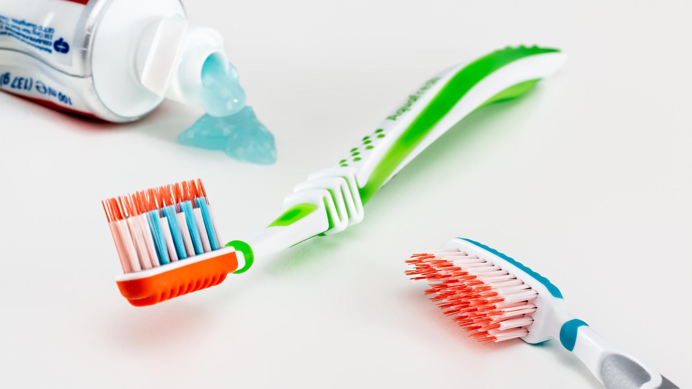

Our Hygienists focus on prevention of gum disease and overall oral health and wellness. A dentist on the other hand is committed to treating and curing any dental issues that already exist. Both our hygienists and dentists offer a necessary balance to ensure you are provided with the best care possible.
Prevention is better than Cure
Oral Hygiene is the Key of success of any dental Procedures.
We Care About Your Oral Cavity.
Scaling and polishing (removal of plaque and tartar).
Detecting, treating and managing periodontal (gum) disease.
Obtaining medical and dental history.
Performing extra and intra oral examinations.
Providing preventive services such as fluoride applications and fissure sealants.
Educating patients on appropriate oral hygiene techniques to maintain oral health such as tooth brushing and flossing.
Diet counseling.
Stain removal from tea, coffee or colored drink consumption.
Teeth whitening procedures.
Seeing a Dental Hygienist regularly is necessary to maintain good Oral Health. Brushing and flossing daily is not enough to reach the hidden areas where tartar and plaque can build up. Our Hygienists use special instruments to clean your teeth, remove tartar and plaque, and help preventing gum disease or bone loss. A Dental Hygienist can also advise you on products you can use to help improve your home oral hygiene routine